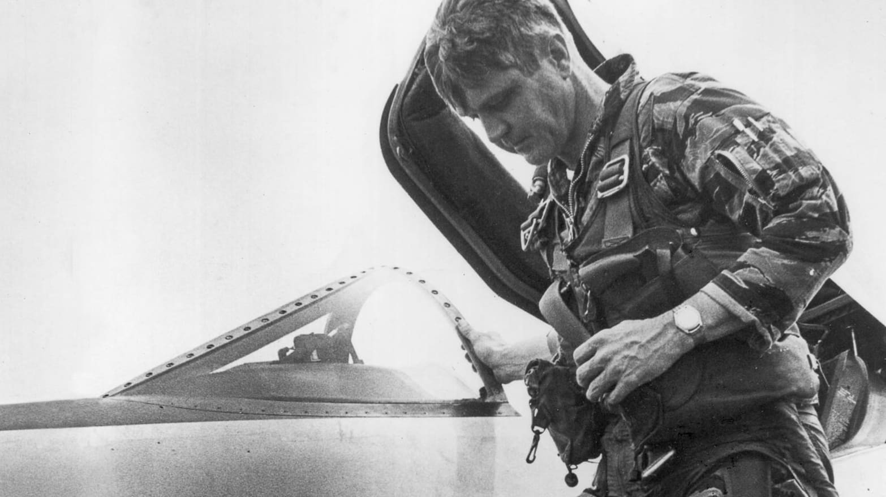

Admiral James B. Stockdale
The Philosophical Fighter Pilot

Admiral Stockdale stepping out of his aircraft after a mission.
Timeline of Admiral Stockdale's Life
Dec 23, 1923 -
Born in Abingdon, Illinois, U.S.
1943 -
Entered US Naval Academy
1946 -
Graduates Naval Academy
1950 -
Graduates as a Naval Aviator
1959 -
Enters Stanford University to study International Relations
9 September 1965 -
Stockdale's A-4 Skyhawk shot down in a mission over North Vietnam. He is captured as a POW
February 12, 1973 -
Released as a POW
1992 -
Vice Presidential Candidate
July 5, 2005 -
Died 88 years old in Cornonado, California
Check out this link to find out more about Admiral Stockdale